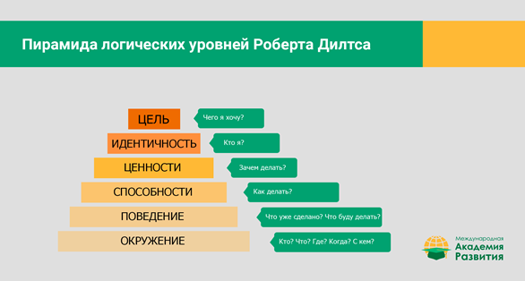

Пирамида нейрологических уровней Роберта Дилтса
Здравствуйте, с вами снова Ошемкова Наталья, и сегодня я хочу поговорить про модель НЛП, которая называется «пирамида нейрологических уровней Роберта Дилтса». Фамилию Дилтса я уже называла в самом начале. Это человек, который написал трехтомник «Стратегия гениев». В 1970-х он разработал технику, которая связывает воедино разные уровни существования человека, и мы можем использовать ее, чтобы конкретизировать свои цели.
Как это все выглядит? Когда у вас есть какая-то конкретная цель, вы можете задавать себе вопросы последовательно по некоторым уровням как бы снаружи внутрь — от того мира, который вас окружает, к себе самому, к ядру своей личности. В психотерапии, когда мы делаем эту технику, мы предлагаем людям не просто отвечать на вопросы, а прямо писать эти уровни на бумажках и ходить по ним ногами — перемещаться, чтобы лучше прочувствовать каждый уровень, но в принципе это не обязательно. Сейчас я озвучу сами вопросы.

Уровень 1: Окружение. Окружение здесь понимается в широком смысле: это не только люди, это вообще всё, что принадлежит окружающему миру. Соответственно, здесь важно задать себе вопрос: кто должен знать о моей цели? Кто может мне помочь? Кто может меня поддержать? Это могут быть люди, у которых есть какая-то важная информация, или, может быть, это просто мои близкие, которые будут морально меня поддерживать — они должны знать о моей цели. Или, может быть, это люди, которые ничего не сделают применительно к моей цели, но ее реализация может как-то повлиять на них, и им нужно знать, что теперь я буду тратить часть своего времени на достижение нужного мне результата.
Точно так же можно задать себе вопрос: что может помешать? Есть ли какие-то люди, с которыми лучше попрощаться, или просто нужно знать, что они могут что-то делать, что будет вас останавливать, и подумать, можете ли вы это предотвратить или просто надо заложить на это дополнительное время.
Кроме вопросов про людей, можно задать вопросы про какие-то вещи из окружающего мира. Есть ли какие-то книги, которые могут вам помочь? Есть ли какая-то информация, которая важна в достижении этой цели? Может быть, есть какие-то важные места, где вам нужно присутствовать? Может быть, для достижения этой цели вам нужно переехать, или пойти на какое-то конкретное обучение, или ходить в какой-то клуб, чтобы познакомиться с определенными людьми или системой?
Может быть, есть какие-то вещи, которые вас отвлекают? Подумайте, не мешают ли вам в достижении цели социальные сети? Может быть, перестать читать ежедневные новости, которые ухудшают вам настроение, и из-за этого вы хуже концентрируетесь?
Таким образом, этот уровень про весь окружающий мир: как он может позитивно или негативно влиять на то, чего вы хотите, и что, возможно, вам следует изменить.
Уровень 2. Поведение. Что вы реально уже делаете, чтобы достичь этой цели? Что хорошо сработало, а что не очень? Что вы можете еще попробовать? Что другие люди делают, чтобы достигать подобных целей? Может быть, у вас есть похожий опыт в прошлом, и вы можете скопировать свое собственное поведение оттуда? Может быть, есть какие-то действия, которыми вы себя останавливаете?
Уровень 3. Способности и возможности. Что вы умеете, что поможет достижению цели? Какие у вас есть навыки, способности и возможности? Это могут быть конкретные навыки: например, чтобы создать свой бизнес, у меня есть организаторские навыки и лидерские качества, которые позволят мне выстроить команду. Или это может быть метанавык, например, я умею хорошо воспринимать новую информацию. Этот навык полезен в любом новом деле. Или я умею быстро принимать решения, или располагать к себе людей (или и то, и другое). Таким образом, на этом уровне вы перечисляете все навыки, которые могут пригодиться в процессе достижения цели.
А теперь о том, что вас останавливает. Какие у вас есть навыки, которые мешают двигаться к цели? Может быть, у вас есть навык очень сильно сомневаться? Или серьезно критиковать себя? И это вас останавливает. Может быть, у вас есть навык откладывать все на потом, ничего не делать вовремя, и это тоже мешает вам продвигаться к цели?
Может быть, есть какие-то навыки, которые нужно развить. Чтобы продвинуться к цели, вам нужно, например, научиться выстраивать границы, то есть отказывать другим людям, защищать свое время. Может быть, вам нужно научиться делегировать. Может быть, вам нужно лучше узнать про свои приоритеты. И т.д.
Уровень 4. Убеждения и ценности. Мы достаточно много говорили про ценности, но здесь их важно вспомнить применительно к конкретной цели. Убеждения могут быть про конкретную цель, а могут быть более глобальные: про себя, мир, других людей. Например, если я выстраиваю свой бизнес, у меня может быть убеждение, полезное для реализации этой цели — что именно такой компании сейчас не хватает миру. Та миссия, которую я задумала, сейчас нужна людям, это будет очень полезное дело. Или у меня могут быть убеждения про меня. Например, что я умею добиваться того, чего хочу. Это отличное метаубеждение, которое пригодится для достижения любой цели.
Или есть убеждение про внешний мир. Кто-то считает, что мир в целом дружелюбный, что все люди братья, и если что-то не получится, можно попросить помощи и это сработает. Или, наоборот, у меня есть убеждение, что мир — это холодное, небезопасное место, где никому нельзя доверять и признаваться в том, что ты запланировал: если окружающие увидят, что ты двигаешься к успеху, они будут вставлять палки в колеса.
В каждом случае мы можем взвешивать эти убеждения: помогают они или мешают. Любое убеждение может быть как продвигающим, так и ограничивающим — это сильно зависит от того, как на самом деле выстроена ваша реальность. Конечно, с убеждением, что мир дружелюбный, в целом жить проще. Но если я живу в жесткой конкурентной среде, то такое убеждение мне скорее помешает. Если я буду всё время святиться позитивом, скорее всего это не сработает. Нам не нужно абстрактное позитивное мышление: популярные идеи про магическое мышление «думай только о хорошем, и ничего плохого не произойдет» — это не очень хорошо работает. Нам нужно оценить: если бы у меня было другое убеждение, это продвинуло бы меня к моей цели? Может быть, это лучше работает в данной ситуации?
Уровень 5. Идентичность. Кто я на этом пути? Если сложно ответить на этот вопрос, можно подумать: какой(ая) я. Это не совсем тоже самое, но достаточно близко. Если не получается сразу найти для себя какую-то роль или понимание идентичности (кто я здесь, например, предпринимательница, искательница приключений, исследовательница и т.д.), вы сможете сказать про себя, какая(ой) вы здесь (например, смелая, уверенная, точно знающая, чего вы хотите, и т.д.). Это тоже ответы на вопрос: «Кто я?», хотя немножко с другой формулировкой.
Уровень 6. Цель, миссия. Самая высокая ступень пирамиды соответствует цели, идеалу или миссии: тому, чего вы хотите, или каким человеком вы хотите стать, или что вы хотите привнести в этот мир. На этом уровне можно представить себя, как будто вы уже достигли всего этого, и соединиться с этим образом.
Полезно соединиться с этим образом, оглянуться назад и еще раз задать себе все эти вопросы: «Когда я уже достигла своей цели, какое у меня окружение, какое поведение, какие способности и возможности, убеждения и ценности, и кто я на этом пути?» Иногда эти ответы внезапно меняются, даже когда вы просто представите себе, что достигли цели. И тогда можно что-то посоветовать себе самому в прошлое, дать себе какие-то обещания и добавить что-то на все уровни пирамиды.
Итак, каждому уровню пирамиды соответствуют краткие формулы вопросов. Давайте их вспомним.
Окружение: кто, что, где, когда, с кем?
Поведение: что делать, что уже сделано, что надо делать, что буду делать?
Способности и возможности: как делать? Какие есть качества, стратегии, паттерны поведения и т.д.?
Убеждения и ценности: зачем делать?
Идентичность: кто я?
Цель: чего я хочу?
Когда вы продумаете все эти шаги, обсудите всё по пунктам, вы почувствуете, как уровни интегрируются, начинают лучше соотноситься друг с другом — и опасность что-либо упустить уменьшится. Есть люди, которые хорошо понимают про ценности и миссию, но не очень хорошо про конкретные шаги. Есть люди, которые, наоборот, легко планируют поведение, но забывают подумать, какие качества им для этого нужны или к чему все это ведет, и т.д. А если вы продумаете все эти вопросы в связке, то избежите ошибок.
Эту технику можно использовать для жизни в целом, а можно для конкретных целей. Кроме того, она помогает, когда нужно сделать выбор из двух вариантов. Просчитайте все уровни по каждому из вариантов и посмотрите, что вам больше подходит.
Спасибо за внимание.